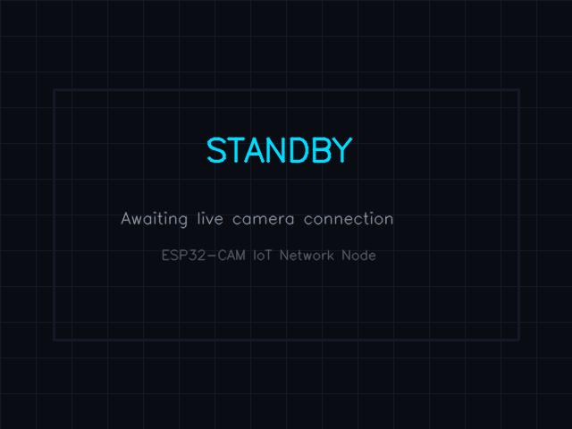

Live Telemetry & Raw Data
Real-time physical measurements and surface vision tracking.
Primary Sensor Streams
Applied Load
0.0 kPa
Center Settlement
0.00 mm
Shear Settlement
0.00 mm
Geogrid Strain
0.0 µε
Dual Vision Analytics System
Raw Camera Feed

Damage Assessment Feed

Structural Diagnostics
Derived geotechnical metrics and state monitoring.
Structural Integrity State
Status: Stable
Geotechnical Analytics
Estimated Tensile Force
0.0 kN
Settlement Velocity (dδ/dt)
0.00 mm/s
Safety Thresholds Configuration
Subsurface Profile
Load Cell (0.0 kPa)
Upper Sand Layer
↓ 0.00 mm
Geogrid Reinforcement
Strain: 0.0 µε
Subgrade
Data Vault & Export
Historical session charting and file extraction.
Historical CSV Analysis
Select a previously downloaded session .csv to visualize.
Session Archival
Settlement vs. Time
Load vs. Time
Strain vs. Load
Session Data Log
| Timestamp | Load (kPa) | Settlement (mm) | Strain (µε) | Crack Anomaly |
|---|